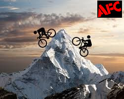

2021 AFC Everesting - Ilchester Road

AFC will be
"Everesting" a local climb.
What better hill to do it on than our local Ilchester Road
in Ellicott City MD. Of course we will be doing this for charity... all donations and money made during this event will go to support
Columbia Gear Closet and Diabetes DESTINY.
Total Raised So Far: $345.00
(Total is updated nightly)
To make donations with cash or check mail to:
Adventures For The Cure
1221 Brandford Road
Catonsville, MD 21228
Make checks payable to "Adventures For The Cure"
The subject line should read: "AFC Everesting"
- Riders:
- Adam Driscoll
- Dan Frank
- Jesse Tubb
- Jeremy Michalke
- Jimmy Klose
- Steven Drost
- Tyler Hockstra
- Ian Schwing
- John Cservek
- Dan Zavork (doing it remotely)
- Ty Long
- Adam Weddington
- Nolan O'Donnell
- Sean Schmidt
- Start Location: Bottom of Ilchester Road
- Date: Wednesday, April 21st
- Estimated Start Time: 6am
- End Time: It should take 12+ hours to finish!
- Base of operations during the event will be 1/2 way up the climb at the top of 'the wall'.
 &
&